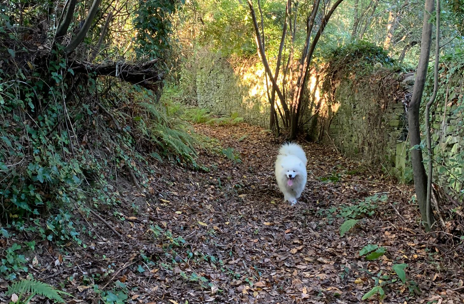

Hello, I'm Marcos!
Software Developer
About me
I'm a junior software developer passionate about application development. Backend is my strength, with the Spring framework as my favorite tool, though I have also learned .NET. I enjoy thinking about new and optimal solutions to the problems I face daily, and I love learning new technologies. I also have a basic knowledge of frontend development, using frameworks like ASP.NET and React.
Additionally, I have certified involvement in mentoring programs at my university, where I guided new students through that challenging but definitely fantastic time in their lives, which helped me develop strong teamwork skills.
In my free time, I fully enjoy nature — fishing, hiking in the mountains, and spending nights in the wilderness. Whenever possible, I love sharing these adventures with my beloved dog.
